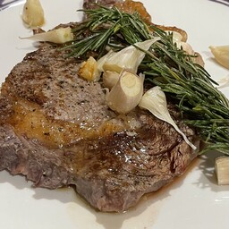

Steak
Shopping
Ribeye, 1 lb for 1-2 people
coarse salt
pepper + grinder
maybe fresh rosemary
maybe garlic
Thaw if frozen
Season
Cover in salt (coarse crystals) and pepper
Leave for 30 min (or longer in fridge)
Cook
Heat cast iron
Pick up with tongs
Cook the fatty edge to grease up the pan
Cook one side for 3 minutes
Don't move the steak
Flip with Spatula
Cook for 3 minutes
Remove from pan
Let it rest for 5 min
Maybe deglaze the pan
Melt butter in the pan
Maybe add rosemary
Maybe add garlic
Or other things
Scrape the brown bits into the butter
Cook up to 1 min
Pour over the steak
Or pour over mashed potatoes :o